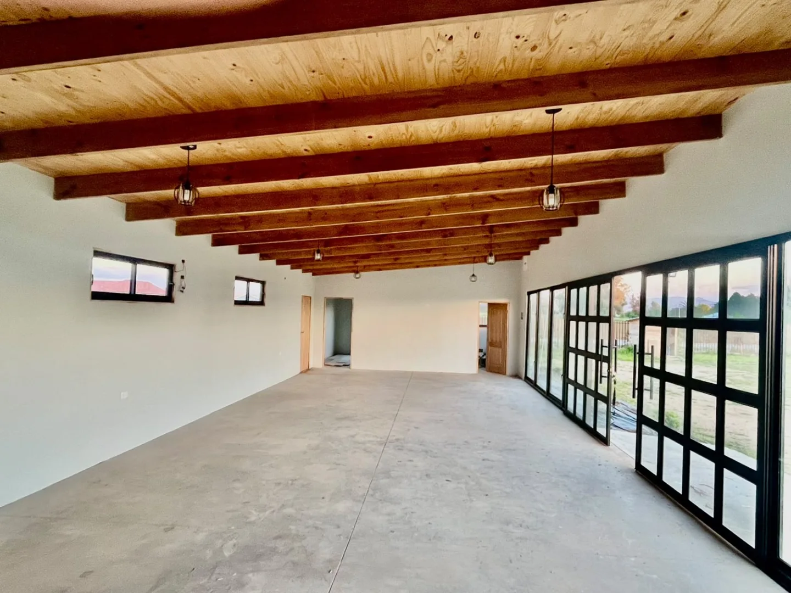
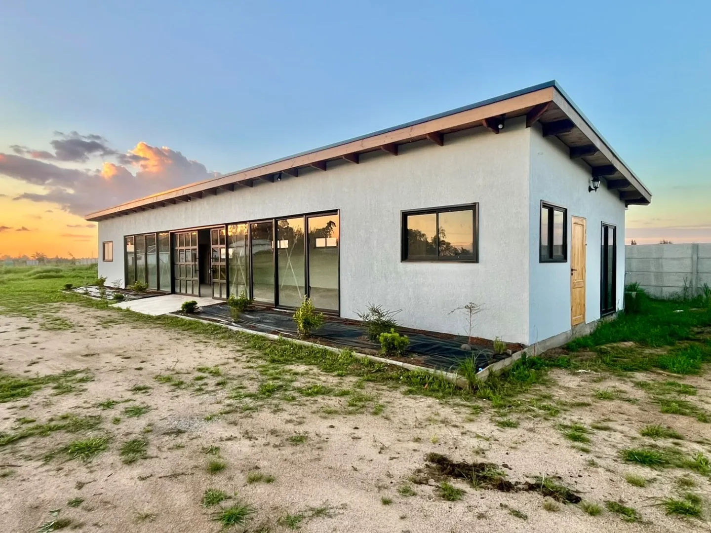

Un nuevo entorno.
Una nueva forma
de proyectarse.
Espacio, luz natural y una conexión con el exterior.
El punto de partida para sus próximas ideas.
Sus ideas necesitan
un lugar propio.
Un espacio abierto, de líneas simples y materiales cálidos, para imaginar una forma distinta de trabajar y reunirse.
El coworking se suma a Inversiones San Cristóbal como una nueva alternativa para profesionales, equipos y proyectos. Conozca las instalaciones y conversemos sobre la distribución y modalidad que necesita.
Recorrer las instalaciones
Abierto a la luz.
Abierto a las posibilidades.
Interior abierto
Un ambiente continuo para evaluar distintas configuraciones de trabajo.
Luz natural
Amplios ventanales conectan visualmente el interior con el entorno.
Áreas exteriores
Espacios verdes alrededor del edificio complementan la experiencia del lugar.
Conozca su próximo espacio.
Fotografías actuales de las instalaciones.
Seleccione una imagen para ampliarla.
Primero, conozcamos
su forma de trabajar.
Cuéntenos qué busca: una modalidad de trabajo, un espacio para su equipo o un lugar para reunirse. Evaluemos juntos las posibilidades del coworking.
Consultar modalidadesDistribución, mobiliario, servicios incluidos y disponibilidad se confirman al coordinar la visita.
Conversemos sobre
lo que viene.
Cuéntenos cómo le gustaría utilizar el coworking y coordinemos una visita al espacio.
Visitas al conjunto previa coordinación.